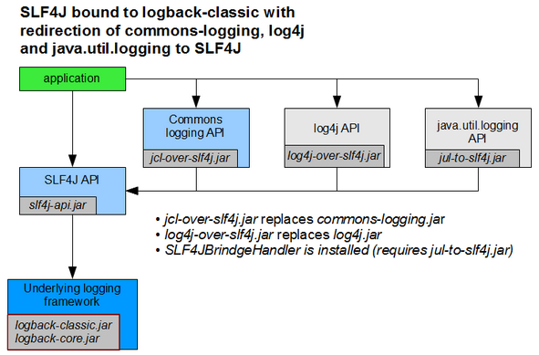

git clone https://github.com/anderscore-gmbh/spring-2023.05
Ablauf:
Auschecken
Bauen
Ausführen
GIT (Versionverwaltung) zum Auschecken
Maven zum Bauen
trainer@pc:~$ cd spring-2023.05
trainer@pc:~/spring-2020.07$ cd lesson02-setup
trainer@pc:~/spring-2020.07/lesson02-setup$ mvn clean package
[INFO] Scanning for projects...
...
[INFO] ------------------------------------------------------------------------
[INFO] BUILD SUCCESS
[INFO] ------------------------------------------------------------------------
[INFO] Total time: 2.156 s
[INFO] Finished at: 2021-07-22T09:55:50+01:00
[INFO] Final Memory: 18M/213M
[INFO] ------------------------------------------------------------------------trainer@pc:~/spring-2023.05/lesson02-setup$ mvn exec:java
[INFO] Scanning for projects...
[INFO]
[INFO] ------------------------------------------------------------------------
[INFO] Building lesson02-setup 1.0-SNAPSHOT
[INFO] ------------------------------------------------------------------------
[INFO]
[INFO] --- exec-maven-plugin:1.5.0:java (default-cli) @ lesson02-setup ---
Message: Hello World!
[INFO] ------------------------------------------------------------------------
[INFO] BUILD SUCCESS
[INFO] ------------------------------------------------------------------------
[INFO] Total time: 1.407 s
[INFO] Finished at: 2021-07-22T09:57:42+01:00
[INFO] Final Memory: 8M/243M
[INFO] ------------------------------------------------------------------------Holen Sie sich den Beispielcode zu diesem Training mit einem
git clone https://github.com/anderscore-gmbh/spring-2023.05
Wechseln Sie in das Verzeichnis lesson02-setup und
bauen Sie das Projekt mit mvn clean package.
Führen Sie das Projekt mit mvn exec:java aus.
Ablauf
Projekt mit IDE öffnen
Mit Sourcen vertraut machen
Anwendung ausführen
Importieren Sie das Projekt in eine Entwicklungsumgebung Ihrer Wahl und führen Sie damit die Anwendung aus.
Empfohlene IDE für diesen Workshop: → Spring Tools 4 for Eclipse
Alternativen:
public static void main(String[] args) {
GenericApplicationContext ctx = new GenericApplicationContext();
ctx.registerBean("greetingService", GreetingService.class,
() -> new GreetingService());
ctx.refresh();
GreetingService service = ctx
.getBean("greetingService", GreetingService.class);
System.out.println("Message: " + service.getGreeting());
}Was geschieht hier?
Was ist ein ApplicationContext?
Welche Möglichkeiten gibt es sonst noch, einen ApplicationContext anzulegen?
Was bewirkt die Methode refresh?
Welche Alternativen gibt es, an den GreetingService aus dem ApplicationContext heranzukommen?
Der ApplicationContext ist ein Container für Service-Objekte, den sogenannten Beans.
Er speichert diese Objekte bzw. deren Factories in einer Registry unter einem eindeutigen Namen, vergleichbar mit einer HashMap.
Beim Erzeugen von Objekten nutzt er diese Registry um Abhängigkeiten aufzulösen.
Nutzen den Debugger um sich den ApplicationContext zur Laufzeit anzusehen. |
Es gibt diverse Klassen, die das ApplicationContext-Interface implementieren, die wichtigsten sind:
ClassPathXmlApplicationContext für XML-Config
AnnotationConfigApplicationContext für Java-Config
StaticApplicationContext für Tests
Am flexibelsten ist der GenericApplicationContext, der über verschiedene AbstractBeanDefinitionReader
unterschiedliche Formate für die Context-Definition unterstützt.
Für Webapplikationen gibt es spezielle ApplicationContext Klassen:
XmlWebApplicationContext für XML-Config bei Webapps
AnnotationConfigWebApplicationContext für Java-Config bei Webapps
GenericWebApplicationContext ist das Gegenstück zu GenericApplicationContext für Webapps
refresh?Die Methode befüllt den ApplicationContext.
Die Methode sollte nur aufgerufen werden, wenn sie nicht bereits
durch den Konstruktor der jeweiligen ApplicationContext Klasse aufgerufen wird.
TrainingService aus dem ApplicationContext heranzukommen?Verwendung einer der getBean Methoden der ApplicationContext Schnittstelle
Definition einer weiteren Bean mit einer Abhängigkeit zum GreetingService
Problem
Die eingesetzen Bibliotheken verwenden verschiedene Logging-APIs
Einheitliche Logging Konfiguration an einer Stelle
Eine Logdatei für alle Logausgaben
Lösung
Ein Loggingframework besteht aus einer API und einer Engine
Eine Bridge ermöglicht den Einsatz einer Engine für fremde APIs
In der Regel genügt es, die richtigen Abhängigkeiten anzugeben

Java Util Logging (JUL) (JRE Bestandteil)
Apache Log4j 2™ (Logging Engine für diesen Workshop)
Simple Logging Facade for Java (SLF4J) (Logging API für diesen Workshop)
Apache Commons Logging ™ (JCL) (von Spring-Framework verwendet)
Logback (Default bei Spring-Boot)
Spring bringt seit Version 5 im Modul spring-jcl eine eigene
Logging-Bridge mit, die als Alternative zu jcl-over-slf4j
verwendet werden kann.
Diese unterstützt direkt Log4J 2 und JUL ohne zusätzliche Bridges.
Um JCL zu verwenden, muss man die Abhängigkeit zu spring-jcl exkludieren.
// BOM legt Versionen fest
compile 'org.apache.logging.log4j:log4j-bom:2.11.2'
// API für Log4J-2
compile 'org.apache.logging.log4j:log4j-api'
// Logger-Engine
compile 'org.apache.logging.log4j:log4j-core'
// API für SLF4J
compile 'org.apache.logging.log4j:log4j-slf4j-impl'
// Commons Logging Bridge
compile 'org.apache.logging.log4j:log4j-jcl'
// Commons Logging API
compile 'commons-logging:commons-logging'
// Adapater für JUL, benötigt -Djava.util.logging.manager=org.apache.logging.log4j.jul.LogManager
compile 'org.apache.logging.log4j:log4j-jul'Die Abhängigkeiten sind auf das notwendig Minimum reduziert:
// API für SLF4J
compile 'org.apache.logging.log4j:log4j-slf4j-impl:2.11.2'Über die Abhängigkeiten von log4j-slf4j-impl werden die Log4J2-Engine und die SLF4J-API eingebunden.
private static final Logger log = LoggerFactory.getLogger(MyClass.class);log.info("Ingendwas passiert");log.info("Schreibe {} bytes in Datei {}", size, file);log.error("Schief gegangen", ex);<?xml version="1.0" encoding="UTF-8"?>
<Configuration status="WARN" shutdownHook="disable">
<Appenders>
<Console name="Console" target="SYSTEM_OUT">
<PatternLayout pattern="%d{HH:mm:ss.SSS} [%t] %-5level %logger{36} - %msg%n"/>
</Console>
<File name="File" filename="target/app.log">
<PatternLayout pattern="%d{HH:mm:ss.SSS} [%t] %-5level %logger{36} - %msg%n"/>
</File>
</Appenders>
<Loggers>
<Root level="info">
<AppenderRef ref="Console"/>
<AppenderRef ref="File"/>
</Root>
<Logger name="setup" level="debug"/> <!-- Definiert Logger für Package 'setup' -->
</Loggers>
</Configuration>Stellen Sie das Root-Level der Logging-Konfiguration auf DEBUG.
Was besagen die Logausgaben von Spring, die Sie damit erhalten?
Bauen Sie eine Logausgabe in die main-Methode Ihrer Applikation ein.
Möglichkeiten, den Lebenszyklus einer Bean zu beeinflussen
Interfaces InitializingBean, DisposableBean und Lifecycle
JSR-250 Annotationen @PostConstruct und @PreDestroy
Explizite Angabe der init-method oder destroy-method per Konfiguration
Default Init/Destroy-Methoden (nur XML-Config)
public close/shutdown (nur JavaConfig), abschaltbar über @Bean(destroyMethod="")
Der ShutdownHook ist notwendig, damit der ApplicationContext sauber heruntergefahren wird.
ctx.registerShutdownHook();
In der Log4J 2 Konfiguration muss mit shutdownHook="disable"
verhindert werden, dass Log4J vor Spring beendet wird. |
mvn exec:java startet keine eigene VM, deshalb wird der Shutdown-Hook
nie augerufen. |
public class MyService implements InitializingBean, DisposableBean {
private static final Logger log = LoggerFactory.getLogger(MyService.class);
@Override
public void afterPropertiesSet() throws Exception {
log.info("service created");
}
@Override
public void destroy() throws Exception {
log.info("service destroyed");
System.out.println("service destroyed"); // falls Logging schon beendet wurde
}
}@PostConstruct
public void before() throws Exception {
log.info("service created");
}
@PreDestroy
public void after() throws Exception {
log.info("service destroyed");
}Dafür ist ein AnnotationConfigApplicationContext notwendig! |
Erweitern Sie den GreetingService so, dass er loggt,
wenn er vollständig initialisiert wurde und
wenn er zerstört wird.
Beachten Sie, dass registerShutdownHook() notwendig ist, damit der
ApplicationContext mitbekommt, wenn die Applikation beendet wird. |
Entwicklungsumgebung einrichten (Beispielanwendung auschecken, bauen und laufen lassen)
Verwendung der Spring-Dokumentation (Reference, API, Guides)
Logging konfigurieren
Wie erzeugt man einen ApplicationContext?
Lebenszyklus des ApplicationContext (registerShutdownHook)
Wie nutzt man einen ApplicationContext (Zugriff auf Beans)?
Was ist der ApplicationContext?
ApplicationContext mit dem Debugger untersuchen
Fragen?